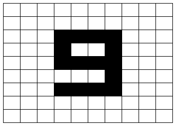
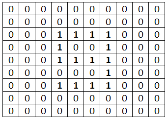
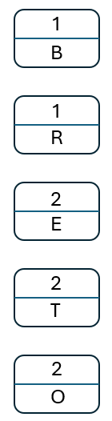
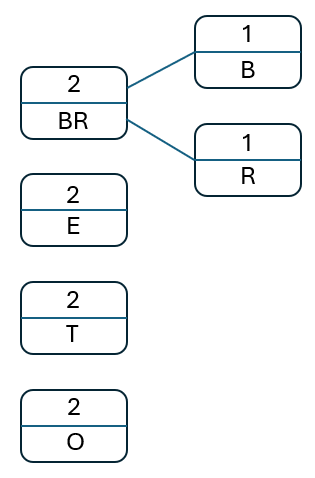
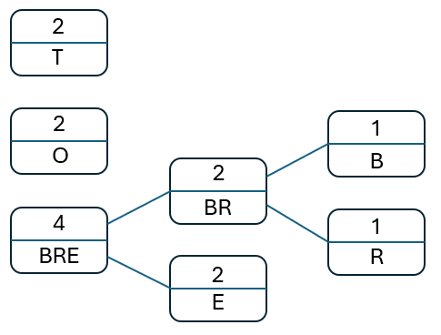
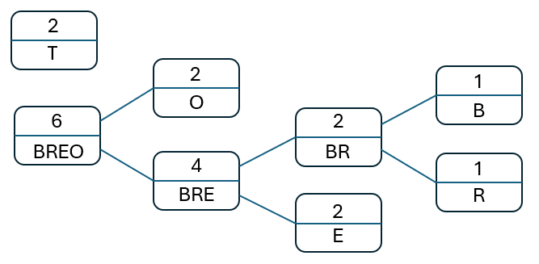
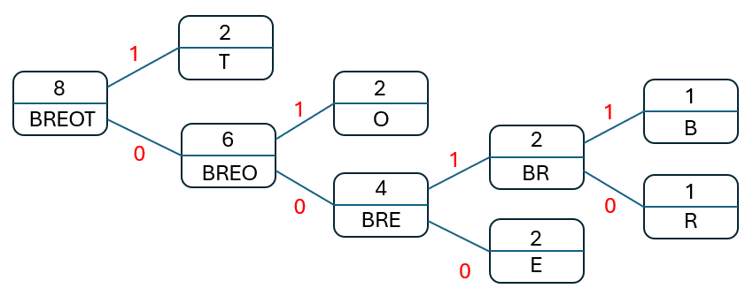

Compression
Objectives
- Explain what data compression is.
- Understand why data may be compressed and that there are different ways to compress data.
- Explain how data can be compressed using Huffman coding.
- Be able to interpret Huffman trees.
- Be able to calculate the number of bits required to store a piece of data compressed using Huffman coding.
- Be able to calculate the number of bits required to store a piece of uncompressed data in ASCII.
- Explain how data can be compressed using Run length Encoding (RLE).
- Represent data in RLE frequency/data pairs.
Both image files and sound files can get large very quickly. To reduce the size of these files they have to be compressed i.e. made smaller to use less bits and take up less space on a storage device or reduce network transmission times. Text files can also, and will be, compressed. There are two main approaches:
- lossy compression
- lossless compression
Within each method there are a host of different algorithms that can be employed. Some of these can get very complicated and are out of scope but we can look at the principles behind these approaches to explore the differences and determine their key characteristics. Fundamentally the main question to ask is: "Does the compression technique applied preserve the data in the image file or the sound file, or is some of the data lost?".
Lossy Compression
Unlike lossless compression, lossy compression will reduce the file size by removing data which means when reproduced it will not be (and can never be) the same as the original.
Note
Data compressed using a lossy algorithm can never be restored back to the original
Again the algorithms used are complex and out of scope here. We know, in theory, the size of an image file can be reduced by using less pixels or a smaller bit depth but this will impact significantly on the image. The compression algorithms seek to use patterns in the image and reduce the space needed to represent that image, i.e. to lose detail, preferably detail our eyes are not aware of.
This approach is most effective with image and audio files where our ears and eyes can tolerate some loss of perception. The amount of compression applied can be adjusted where there is a trade off between higher accuracy for less effective compression.
JPEG
For images the effects of the lossy compression algorithm may not be immediately noticeable, the detail may be subtle depending on the original image and the device being used to reproduce that image.
JPEG images are a common form of lossy compressed images. Compare the following two images, the one on the left is the original PNG (543Kb), the second a JPEG (108Kb). It's difficult to tell the difference between the two but the second is significantly smaller than the first.

If we zoom in to the original (a portion of the man's white top), see how the adjacent pixels are very similar. For the highlighted pixels an average value could be taken by noting the first and the last and then getting the computer to calculate the values in between rather than storing them explicitly. Thus, in this run only 2 values need to be stored rather than 8 thus reducing the colour depth:
This process is known as linear interpolation.
MP3
The MP3 format for audio has had a huge impact on how we collect, listen and distribute sound files. MP3 is a lossy compression algorithm applied to audio files, it is not the same quality as the original as data has been lost but depending on our ears and the quality of the devices we're using to play the sound files it is a very good compromise.
MP3 aims to compress the original audio by a factor of between 10 and 14 without noticeably affecting the overall quality (i.e. it remains recognisable). The MP3 algorithm relies on a number of factors:
- there are certain sounds the ear cannot pick up i.e. very high frequencies
- there are certain sounds we hear better than others and - when two sounds are played at the same time, the quieter one may be not heard, this is known as psycho-acoustics
- plus ... some complicated mathematical algorithms[^1]
This way some sounds can be removed without significantly altering the sound for the listener. This will be subjective of course, and dependent on the equipment being used to reproduce the sound.
When converting an audio file to an MP3 the user can change the bit rate being used which is the number of bits per second encoded in the file. The higher the bit rate, the less data will be removed and the higher the quality of the result, though the file size will also be larger.
As with other forms of loss compression, once the file has been compressed it cannot be reversed. You can convert a .WAV file to .MP3 but you cannot go from .MP3 back to .WAV.
Note
To get more detail on audio compression (beyond what is required for either GCSE or A Level Computer Science) read the brilliant article here
Lossless compression
Lossless compression preserves the original data and rearranges them, packing them into a smaller amount of space. As the name suggest, no data is lost in this process so the original file (the image, audio or text file) can be reproduced exactly. That is, lossless compression is reversible. This is clearly important when compressing database records, spreadsheets or word processing files where exact replication of the original is a must.
Two methods illustrate this process:
- Run Length encoding
- Huffman Encoding
Run Length Encoding
Run Length Encoding (RLE) takes the original file and analyses it for repeated patterns or 'runs' and encodes them into smaller bytes. To illustrate, lets take, perhaps artificially, a sequence of characters:
- "AAAAAAAAA": This string would require 9 bytes, but it could be encoded as
9Awhich only requires 2 bytes - "AAAAAbbb44444444z00000000": This string would require 25 bytes but the patterns could be extracted and encoded as
5A3b841z80
Note the z in the string above, this has now doubled the amount of storage required. It's not impacted on the overall saving achieved but data where there is little or no repetition will not gain using RLE.
The same approach can be taken with binary data where repetitions of 0s and 1s is more common, e.g. take the following string of bits:
0000000111111111111000011111- that is, 7:0 12:1 4:0 5:1
- thus:
0111 1100 0100 0101(with spaces inserted for readability) - this has saved 12 bits
Before adopting this approach we'd need to consider how many bits to use for the stock numbers (here 4 is used) and what if the run found exceeds that.
The same method can be applied to images where runs of the same colour can be encoded, for example this following simple monochrome image:

This can be represented as a series of 0s and 1s:

or:
23W4B6W1B2W1B6W4B9W1B9W1B6W4B23W
Here, the original 100 bytes are reduced to 32
Of course, this is an abstraction and the data will be stored as binary. For this monochrome image the bit depth is 1 and thus row 3 of the image consists of 3 0s, 4 1s, 3 0s so we only need to store 343 or in binary 0 0011 1 0100 0 0011 which is only 15 bits (spaces inserted for readability)! Again consideration needs to be given for the number of bits used for the colour code and the number of repetitions.
Note
In a digital photograph it is unlikely to find such runs of repeated colour information so this approach is better suited to cartoons or icons. Typical lossless compression files for images include: .BMP and .PNG
Lossless audio compression
Music files rarely carry a lot of repetitive information so a different approach has to be taken. Instead of using repetition these algorithms attempt to predict the value of the succeeding sample based on what has preceded it. Two examples are FLAC and ALAC. The algorithms used here are complex and out of scope but FLAC claims to reduce the original audio by some 40% and is able to reproduce the original audio with no perceivable loss of quality.
Note
If the original file has little repetitive binary data then compression can actually make the file larger.
Huffman Encoding
Huffman encoding is a lossless data compression technique. In lossless compression, the original data can be perfectly reconstructed from the compressed data without any loss of information. Huffman coding achieves this by assigning variable-length codes to symbols based on their frequencies in the input data.
The key idea behind Huffman coding is to use shorter codes for more frequently occurring symbols and longer codes for less frequently occurring symbols. This way, common patterns in the data are represented with fewer bits, leading to overall compression without losing any information during the encoding and decoding processes.
An example will help. Let's see how to encode the word "BEETROOT" using this technique.
1. Create the frequency table
| Character | Frequency |
|---|---|
| B | 1 |
| E | 2 |
| T | 2 |
| R | 1 |
| O | 2 |
The next step is to assign a binary code to each letter. Naively we might try the following:
| Character | Code |
|---|---|
| B | 1 |
| E | 01 |
| T | 11 |
| R | 100 |
| O | 101 |
The problem with this occurs when these are put together to form a longer bit pattern as it creates ambiguity, for example:
101could be 'O', but it could also be 'BE'
Therefore we need to get clever, and this is where the Huffman algorithm comes into play.
2. Order the frequency table
Reorder the frequency table with the least occurring characters at the top, we need to start with these.
| Character | Frequency |
|---|---|
| B | 1 |
| R | 1 |
| E | 2 |
| T | 2 |
| O | 2 |
3. Build a binary tree
A binary tree is a data structure that consists of nodes that are connected by edges, each node has at most two child nodes connected to it, known as the left child and the right child. We call the node that has connections a parent node. The node at the top of the tree is known as the root node.
For the tree create a node for each element in the frequency table:

- Take the two nodes with the lowest frequencies out of the tree, join them together to make a new node. The label for this new node is the combined frequency of these.
- Place this new node back, ensuring the list of nodes is still in ascending order of frequency (lowest to highest).
- Repeat until there is only one node left.
So, start with the two least occurring elements, 'B' and 'R'. Create a new node that sums their frequency and place this back into the tree:

Take the next two nodes in the new list, 'BR' and 'E. Create a new parent node with the sum of their frequencies and add this new node to the original list, preserving the order:

Repeat this process until there are no more nodes to process:

Once the final tree has been created we assign either a '0' or a '1' to each of the edges, the upper edges are labelled with a '1', the lower edges withe '0':

Note
The root node should have a value equal to the total number of characters in the original text.
4. Encode the characters
To read the encoding for each of the characters start with the root node and follow the path to the target picking up either a '0' or a '1' as indicated by the label on those paths. Thus:
- 'B' -> 0011
- 'R' -> 0010
- 'E' -> 000
- 'T' -> 1
- 'O' -> 01
The final encoding for 'BEETROOT' would therefore be: 0011 000 000 1 0010 01 01 1 (spaces inserted to aid readability). The original 8-character string would take 8 bytes (64 bits), our new encoded version takes 20 bits.
The table of encodings would also be required so space is needed for this. For this single word we'd not save a great deal but for larger text, whole books, the saving would be beneficial using this technique.
Lossless Compression with Python
Here we'll look at how we can implement a simple Run Length Encoding (RLE) algorithm using Python and a full program for implementing Huffman encoding.
Run Length Encoding
Consider first the steps needed for a function that will take as an argument the string to be compressed::
This can be implemented as:
Use this function in a program that asks for a phrase from the user and then returns the compressed form.
See: rle.py
Huffman encoding
To implement the Huffman encoding algorithm requires structures and concepts for Python that are outside the scope of the GCSE so a full program is provided for download to try: Huffman Encoding.